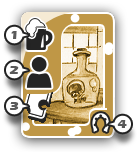

BANG!
BANG! recrée les fusillades des westerns spaghettis et fait s’affronter une bande de Hors-la-loi et un Shérif, qui est leur cible principale. Les Adjoints tentent d’aider le Shérif incognito, mais un Renégat poursuit ses propres objectifs !Dans BANG! chaque joueur interprète l'un de ces rôles et entre dans la peau d'un personnage inspiré du Far West.
BUT DU JEU
Le but de chaque joueur dépend de son rôle :| Le Shérif : | doit éliminer tous les Hors-la-loi et le Renégat pour faire régner la loi et l’ordre. |
| Les Hors-la-loi : | ont envie de tuer le Shérif, mais ils n’ont aucun scrupule à s’entretuer pour ramasser les récompenses ! |
| Le Renégat : | veut prendre la place du Shérif ; son but est d’être le dernier personnage en jeu. |
| Les Adjoints : | aident et protègent le Shérif ; ils ont le même but que lui et l'accompliront coûte que coûte ! |
Dans une partie à 3 joueurs, tous les rôles sont connus et les buts sont les suivants :
| L'Adjoint : | doit éliminer le Renégat ! |
| Le Renégat : | doit éliminer le Hors-la-loi ! |
| Le Hors-la-loi : | doit éliminer l'Adjoint ! |
Personnages
Chaque personnage de Western possède des caractéristiques spécifiques qui le rendent unique. Les personnages possédant des caractéristiques puissantes ont un point de vie de moins. De plus, le nombre de points de vie indique le nombre de cartes qu'un joueur peut avoir en main à la fin de son tour (limite de cartes). En mode facile, les caractéristiques des personnages sont désactivées.LE JEU
Le Shérif commence. Les joueurs jouent à tour de rôle, dans le sens des aiguilles d'une montre. Chaque tour comporte trois phases :- Tirer des cartes ;
- Jouer autant de cartes que l'on veut ;
- Se défausser des cartes en surnombre.
Tirer des cartes
Tirez les deux premières cartes de la pioche, sauf si des caractéristiques ou des événements particuliers entrent en jeu : par exemple, votre sort face aux cartes DYNAMITE et PRISON doit être réglé avant.Jouer autant de cartes que l'on veut
Vous pouvez maintenant jouer des cartes pour vous aider ou blesser les autres joueurs, dans le but de les éliminer.Vous n'êtes pas obligé de jouer des cartes pendant cette phase. Vous pouvez jouer autant de cartes que vous voulez, tant que vous respectez trois règles :
- ne jouer qu'une seule carte BANG! par tour (à moins d'avoir un Volcanic ou une caractéristique particulière) ; cette règle ne s'applique qu'aux cartes BANG! et pas aux autres cartes portant le symbole
 .
. - n'avoir devant vous qu'une copie de chaque carte en jeu sur la table (vous ne pouvez par exemple pas avoir deux cartes PLANQUE, deux cartes MUSTANG, etc.).
- n'avoir qu'une seule arme en jeu.
(= cartes permanentes comprenant les armes, chevaux et autres modificateurs).
Certaines cartes visent un personnage précis, il faut donc les jouer contre le joueur correspondant.
D'autres cartes affectent tous les joueurs ou simplement vous-même : jouez-les au centre de la table.
Les cartes à bord marron sont des cartes immédiates : leur effet s'applique, puis elles sont défaussées.
Les cartes à bord bleu ont un effet permanent : elles restent "en jeu" sur la table face au joueur qui les a jouées.
Les cartes à bord vert (présentes seulement dans l'extension "Dodge City") sont semi-permanentes : elles sont d'abord jouées sur la table, puis (dès la fin du tour de table) peuvent être appliquées pour un effet immédiat, similaire à celui des cartes à bord marron. Toutes les cartes, même les cartes à bord bleu, peuvent être annulées ou volées grâce à d'autres cartes, de type BRAQUAGE ! et COUP DE FOUDRE.
Se défausser des cartes en surnombre
Avant de passer la main au joueur suivant, vous devez défausser les cartes excédant la quantité de vos points de vie.Distance entre les joueurs
La distance entre deux joueurs est le nombre minimum de places entre eux, en partant de leur droite ou de leur gauche. La distance est un facteur important, car toutes les cartes indiquant une portée de tir la prennent en compte. Au départ, vous ne pouvez atteindre des cibles (joueurs ou cartes) qu'à une distance de 1. Lorsqu'un personnage est éliminé, il ne compte plus dans l'évaluation de la distance : lors d'une élimination, certains joueurs vont donc se rapprocher.Éliminer un personnage
Lorsque vous perdez votre dernier point de vie, vous êtes éliminé et sortez de la partie, à moins de jouer immédiatement une carte BIÈRE "in extremis" (voir plus bas). Lorsque vous êtes éliminé de la partie, votre rôle est révélé à tout le monde et toutes vos cartes sont défaussées.Pénalités et récompenses
- Si le Shérif élimine un Adjoint, il doit se défausser de toutes les cartes qu'il tient en main ou qu'il a mises en jeu.
- Tout joueur éliminant un Hors-la-loi (même si le joueur en question est lui-même un Hors-la-loi !) obtient une récompense : il tire 3 cartes dans la pioche.
FIN DE LA PARTIE
La partie se termine quand l’une des conditions suivantes est remplie: a) Le Shérif est tué. Si le Renégat est le seul personnage en vie, il remporte la partie. Sinon, la victoire revient aux Hors-la-loi ;
b) Les Hors-la-loi et le Renégat ont été tués. Le Shérif et ses Adjoints gagnent la partie.
Exemple 1. Tous les Hors-la-loi ont été éliminés, mais le Renégat est encore en jeu. Dans ce cas, la partie continue. Le Renégat est désormais seul contre le Shérif et ses Adjoints.
Exemple 2. Le Shérif est tué, mais tous les Hors-la-loi ont été éliminés, tandis qu’un Adjoint et le Renégat sont toujours en lice. La partie se termine par une victoire des Hors-la-loi !
Même si cela leur a coûté la vie, ils ont atteint leur but !
LES CARTES
Armes
Au début du jeu, chaque joueur dispose d’un revolver Colt 45. Cette arme n’est représentée par aucune carte et est implicite.Muni de cette arme, vous ne pouvez toucher que les cibles situées à une distance de 1 : vous ne pouvez donc atteindre que les joueurs situés immédiatement à votre gauche ou à votre droite.
Pour toucher des cibles situées à une distance supérieure à 1, vous devez jouer une carte arme plus efficace. Les armes sont reconnaissables à leur bord bleu, à leur illustration en noir et blanc et au chiffre affiché dans une cible représentant la portée maximale de l’arme.
L’arme en jeu se substitue au Colt 45 jusqu’à ce que sa carte soit retirée d’une façon ou d’une autre.
Même si les armes sont jouées sur la table, elles peuvent tout de même être volées (par exemple, par l’intermédiaire d’une carte BRAQUAGE !) ou défaussées (par exemple, à cause d’une carte COUP DE FOUDRE).
La seule arme que vous ne pouvez jamais perdre, c’est ce bon vieux Colt 45 !
Vous ne pouvez avoir qu’une arme en jeu à tout moment. Si vous voulez jouer une nouvelle arme, il faut vous défausser de l'arme précédente.
Important : les armes ne changent pas la distance entre les joueurs. Elles représentent la distance maximale que vous pouvez atteindre en tirant.
VOLCANIC : si vous mettez cette carte en jeu, vous pouvez jouer autant de cartes BANG! que vous le désirez pendant votre tour. Ces cartes BANG! peuvent viser une ou plusieurs cibles, mais la distance est limitée à 1.
BANG! et RATÉ !
Les cartes BANG! permettent de réduire les points de vie des autres joueurs. Vous pouvez jouer une carte BANG! pour tirer sur un des joueurs, mais uniquement si la distance qui vous sépare de ce joueur est inférieure à la portée de votre arme.Si vous êtes touché par un BANG! vous pouvez immédiatement jouer une carte RATÉ ! (même si ce n’est pas votre tour !) pour annuler le tir.
Si vous ne le faites pas, vous perdez un point de vie. Lorsque vous n'avez plus de point de vie, vous quittez la partie, à moins de jouer immédiatement une carte BIÈRE "in extremis" (voir le paragraphe suivant). Vous ne pouvez annuler que les tirs qui vous sont destinés.
BIÈRE
Cette carte permet de regagner un point de vie.La carte BIÈRE ne peut pas être utilisée pour aider d'autres joueurs, mais il existe d'autres cartes qui possèdent un effet semblable.
La carte BIÈRE peut être jouée de deux façons :
- normalement, pendant votre tour ;
- en dehors de votre tour, "in extremis", mais uniquement si vous venez de recevoir un tir mortel (qui vous ferait perdre votre dernier point de vie).
Exemple. Il vous reste 2 points de vie et vous en perdez 3 à cause d’une carte DYNAMITE.
Si vous jouez 2 cartes BIÈRE, vous resterez en vie avec 1 seul point de vie restant (2 - 3 + 2). Vous serez toutefois éliminé si vous ne pouvez jouer qu’une BIÈRE vous permettant de regagner 1 point de vie. En effet, dans ce cas, vous seriez toujours à zéro !
SALOON
La carte SALOON possède le même effet que la carte BIÈRE, mais elle s'applique à tous les joueurs.Tous les joueurs regagnent alors un point de vie.
Vous ne pouvez pas jouer un SALOON en dehors de votre tour "in extremis" : le SALOON n'est pas une BIÈRE !
LES SYMBOLES DES CARTES
Chaque carte affiche un ou plusieurs symboles indiquant son ou ses effets.
- Effet principal
- Cible des cartes
- Effet secondaire
- Symboles supplémentaires
Effet principal
Le premier symbole de la carte est l'effet à appliquer. Les principaux effets sont : |
L'effet de la carte BANG! : ôte un point de vie à la cible indiquée. |
 |
L'effet de la carte RATÉ ! : annule l'effet de |
 |
Restaure un point de vie. Destiné au joueur ayant joué la carte ou à la cible indiquée. |
   |
Tirez une, deux ou trois cartes. Si le symbole  (n'importe quel joueur) est inscrit, vous pouvez prendre une carte au hasard dans la main d’un joueur ou une carte en jeu devant lui. Si aucun joueur n'est indiqué, prenez une carte dans la pioche. Dans tous les cas, vous ajouterez les cartes tirées à votre main. (n'importe quel joueur) est inscrit, vous pouvez prendre une carte au hasard dans la main d’un joueur ou une carte en jeu devant lui. Si aucun joueur n'est indiqué, prenez une carte dans la pioche. Dans tous les cas, vous ajouterez les cartes tirées à votre main. |
| Faire défausser une carte. Vous pouvez forcer un joueur ou une joueuse à défausser une carte tirée au hasard dans sa main ou choisir et défausser une carte posée en jeu devant lui/elle. |
Cible des cartes
Certaines cartes sont destinées à une cible précise, d'autres s'appliquent au joueur qui les a jouées (par ex. BIÈRE) ou répondent à leurs propres règles (par ex. INDIENS) : |
Indique que l'effet s'applique à n'importe quel joueur, à condition qu'il soit à portée de tir. |
|
Indique que l’effet de cette carte s’applique à n’importe quel joueur de votre choix, quelle que soit la distance. |
 |
Indique que l’effet de cette carte s’applique à tous les autres joueurs, à l’exception de celui qui la joue, quelle que soit la distance. |
| Indique que l'effet de cette carte s’applique à n’importe quel joueur situé à une distance inférieure ou égale au chiffre affiché. Remarque : les cartes Mustang et Lunette peuvent modifier cette distance, mais pas les armes en jeu. |
Effet secondaire
Très peu de cartes prévoient un effet secondaire. Les effets secondaires sont des effets supplémentaires s'appliquant au moment où vous jouez la carte :| Lorsque vous jouez cette carte, vous devez en défausser une autre (généralement lorsque la carte jouée est puissante). | |
|
Tirez une carte supplémentaire pendant que vous jouez celle-ci ! |
Symboles supplémentaires
Dans le coin inférieur droit de la carte se trouve un symbole supplémentaire. Vous n'en avez besoin que lorsque vous tirez une carte dans l'espoir d'un évènement spécial : certaines cartes comme DYNAMITE et PRISON nécessitent de piocher pour régler votre sort au début de votre tour ; d'autres, comme la PLANQUE, peuvent vous couvrir si vous êtes attaqué.Seules deux icônes vous sont utiles pour le moment :
 |
Vous avez de la chance ! La PLANQUE vous protègera des tirs, vous pourrez vous évader de PRISON, etc. |
 |
Celle-ci n'est valable que pour la DYNAMITE : lorsque vous tirez une carte pour régler votre sort et que vous voyez ce symbole, la DYNAMITE explose et vous perdez 3 points de vie ! Dans le cas contraire, il ne se passe rien et la Dynamite passe au joueur suivant. |
SOUVENEZ-VOUS BIEN :
- Toute carte portant le symbole
 annule l'effet d'une carte portant le symbole.
annule l'effet d'une carte portant le symbole. - Vous ne pouvez jouer qu'une seule carte BANG! par tour, mais vous pouvez jouer autant de cartes portant le symbole que vous le souhaitez.
- Il est impossible d'avoir deux cartes du même nom devant vous.
- Vous ne pouvez jouer qu'une seule arme à la fois, mais il vous reste toujours un Colt 45 "implicite" ne pouvant être ni volé ni défaussé.
- Les armes ne modifient pas les distances entre les joueurs, elles représentent simplement votre portée de tir.
- La carte BIÈRE n'a aucun effet s'il ne reste que 2 joueurs en lice.
- Lorsque vous perdez votre dernier point de vie, seule la carte BIÈRE peut être jouée "in extremis", pas le SALOON.